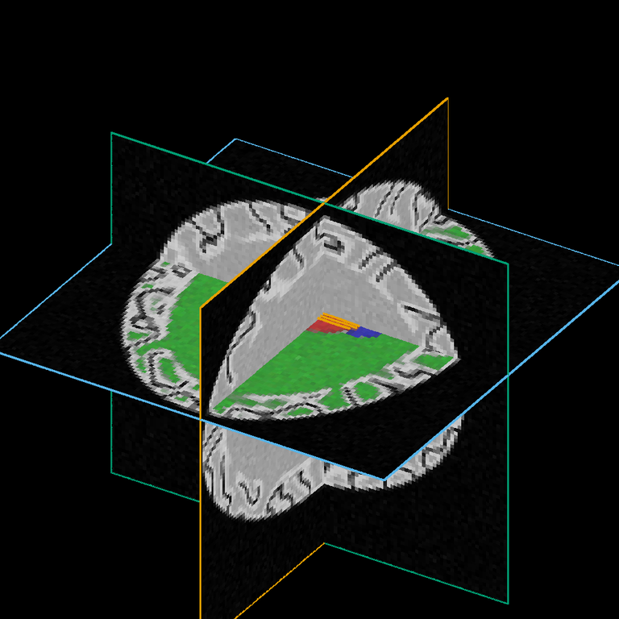
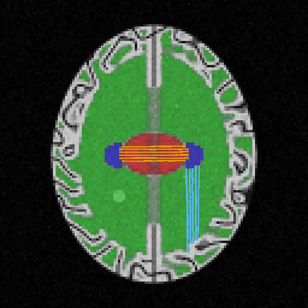

3D
Plane opacity 100 %

3D FLAIR underlay · FA direction overlay
2 bundles · 52 fibers
2 bundles · 52 fibers
PHANTOM^SYNTHETIC
NMR-PHANTOM-001 · 2026-01-01
NMR-PHANTOM-001 · 2026-01-01
Probe x 0.0 · y 0.0 · z 24.5 mm
Bundle 1 · ROI 1 mean FA 0.50 · ADC 944 ×10⁻⁶ mm²/s
Bundle 1 · ROI 1 mean FA 0.50 · ADC 944 ×10⁻⁶ mm²/s
Free rotation · azimuth −58° · elevation 32°
Field of view 168 mm
Field of view 168 mm
Axialz 24.5 mm

Coronaly 0.0 mm
Sagittalx 6.0 mm